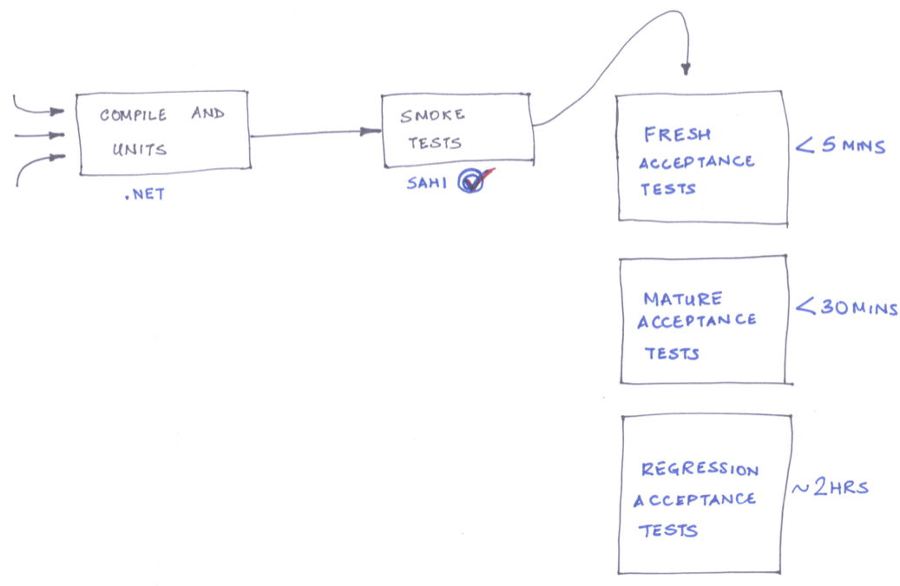

Better Builds : Faster Feedback
@sudhindraRao
srao@thoughtworks.com
What we will talk about
Continuous Integration concepts across different technologies
Identifying feedback loops in CI
Parallelizing builds
CI Tools
CruiseControl - java, .NET, ruby
Hudson - was open source, free to use - now Oracle
Jenkins - fork of Hudson - free
Configurable
Someone somewhere broke my code ... maybe
Large scale integration
Different teams on different development cycle
Failing builds because other teams are not testing - yet
Delivery rush causes everyone to ignore other builds
Selenium builds took hours so were ignored
Continuous Integration takes too long
Tests are flaky
Too many things printed on the report
Delivery pressure is a distraction to quality
Run Unit and Functional CI as basic build
Make smoke tests as part of the basic build
Distribute responsibility to the integrating parties
Contextual selenium tests
Group acceptance test by area
Integration points are identified by selenium tags
Long running tests are run once a day
Lots of apps ... rapid delivery cycle
Continuous Integration for a datacenter
Inventory management, Configuration Management, Network Management, etc.
Many small applications => Application suite
Reduce cycle time of provisioning servers
In the beginning there were 28 apps and 37 builds(including integration builds)
Usually the team worked on 1-2 related apps at a time.
Lacked awareness of complete application
Team did not know what is broken
Complex legacy code ... 72 hours of deployment
Large Scale, Legacy, Mission Critical .NET application
Low coverage test suite
No build etiquette
Need to build new features rapidly
Building the build pipeline
Initial build time was 2 mins
As the coverage started increasing the build time started growing
Establish a work etiquette for builds and continuous integration.
Time to add a smoke test suite
Time to add an acceptance test suite
Time to split test suite by responsibility and application area
Canary in the coalmine

Tests take too long to run
Making builds efficient
Parallelize builds
Spork, Parallel Tests, Selenium Grid
Go, Jenkins Agents
Cloud for testing
Amazon cloud EC2 is cost effective for short term usage
Don't ignore the learning curve
Security restrictions make it hard to deploy
Data movement can be very expensive
Lessons learnt
Continuous Integration concepts translate across different technologies
Identifying feedback loops in CI that fit the context leads to faster corrective action
Resource management is not trivial
Thank you
@sudhindraRao
srao@thoughtworks.com
←
→
#
/